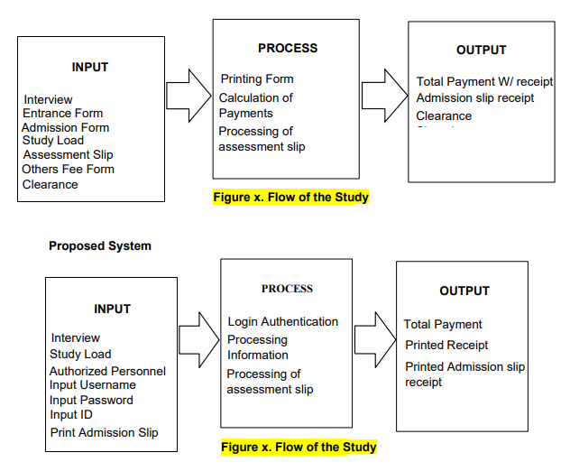

AIMS is a system or set of processes for collecting data about accounting transactions; recording,
organizing, and summarizing the data; and culminating with the preparation of financial statements and
other reports for internal and external users. The AIMS drives to improve the current accounting
processes in MCC . The system ensures the convenience of managing accounting information.
Existing System

Input
This refers to the necessary data that enters the system.
- The accountant should be able to register and must provide username and password.
- The accountant can input payments and can make transactions of the students.
- The accountant can input requirements for those students who lost their receipt or OR’s.
Process
- All data from accounting office can easily be processed.
- Process the data that has been entered and transform it into useful information.
- Calculations and analyses more quickly, and with fewer errors
- Efficient transaction with good internet connection
- Complete a task accurately in dealing with computerization
Output
- Shall deliver reports produced by the system
- To present system output (printed page, screen image, e-transmission)
- Print financial statements and other documents as well as display them on the screen.
- Avoids miscalculations and incorrect total amounts